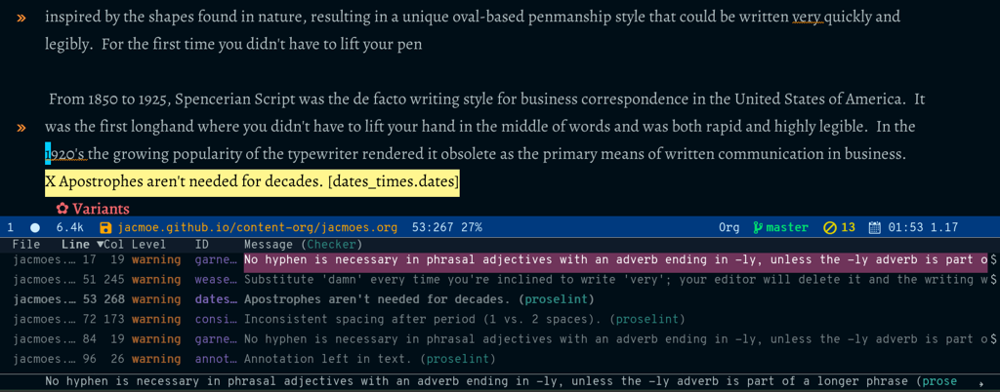
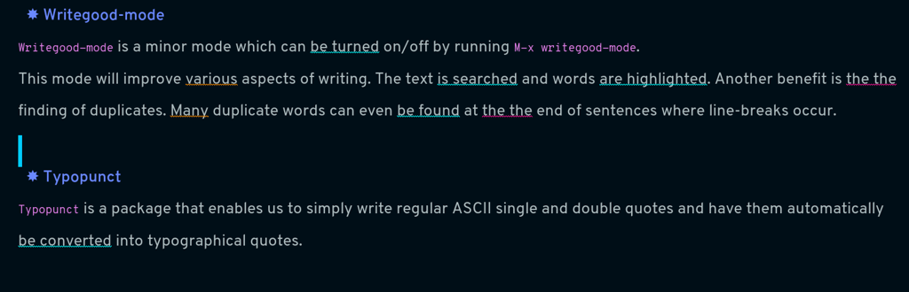

Hotel California of Creative Writing
Table of Contents
This is currently a work in progress
1. Introduction

This is a detailed explanation of why Emacs is my Hotel California of creative writing. It shows how I have created a writing environment exactly how I want it to be, and why there—in my mind—is nothing out there that compares to it.
Perhaps when you think of Emacs, you think of it as a text editor and an Integrated Development Environment (IDE).
It is my hope that, after reading this article, that you start thinking of it as an Integrated Writing Environment (IWE) as well.
2. Emacs
“I use emacs, which might be thought of as a thermonuclear word processor… the engineer-hours that, in the case of Microsoft Word, were devoted to features like mail merge, and the ability to embed feature-length motion pictures in corporate memoranda, were, in the case of emacs, focused with maniacal intensity on the deceptively simple-seeming problem of editing text. If you are a professional writer… emacs outshines all other editing software in approximately the same way that the noonday sun does the stars. It is not just bigger and brighter; it simply makes everything else vanish.”
-Neal Stephenson, 1998 (In the Beginning… Was the Command Line - Wikipedia)
I can make Emacs fit my workflow rather than the other way around.

Emacs is a LISP machine.
2.1. Emacs basics
It’s highly recommended to run Emacs without any customization a couple of times to learn how the basic Emacs commands work. We can do that by running Emacs with the
Q command-line argument, like this: emacs -Q. If you want—again, highly recommended—you can run the Emacs Tutorial by running C-h t. Do the tutorial until you feel confident. Also, experiment in the Scratch buffer, like in the video tutorial above.
Common Emacs commands:
C-x C-f:find-file, allows you to open an existing file. If the file doesn’t exist, create a new file.C-x C-s:save-buffer, saves buffer to disk.C-x b:ibuffer, show a list of buffers in the minibuffer, and allows you to switch to a different buffer.C-x C-b:ibuffer, runs ibuffer in a new window (useqto quit).C-x k: kill (close) buffer.C-x C-c: quit Emacs.C-o:org-open-line: inserts new line below point.C-x 2: split window in two, one below another.C-x 3: split window in two, side-by-side windows.C-x o: switch to other window.C-x 0: close window.C-x 1: close other windows.C-<space>: toggle the mark.C-w: kill (cut) text between point and mark. (‘w’ is for “wipe”).M-w: (copy) save region, but don’t kill it. (‘w’ is for “wipe”)C-y: yank (paste) first item from the kill-ring.M-y: display items in the kill-ring to yank (paste) into the buffer.
To get out of trouble, use C-g (keyboard quit) to cancel whatever it is that Emacs is doing at the moment. Use C-x C-c to rage-quit if you need to (I admit that I have when I first started out). C-x u will undo, and C-? will redo. Use C-x C-s to save current buffer. If the current buffer is a horrible mess, you can run M-x revert-buffer to get back to whatever it was when you loaded it from disk (by doing a C-x C-f). Also, sometimes you will want to toggle a file read-only. You can do that by pressing x C-q.
Press C-h to view a list of options to get help. Especially useful is C-h k when you want to know what a keyboard command does without running it first. For example, pressing C-h k <F4> will tell you that it runs the command kmacro-end-or-call-macro. Press q to close the help window.
If you want to read a comprehensive—very much so—guide to Emacs, the history, and the details of how it works, read my massive Creative writing with Emacs blog post from 2019. It delves into the mechanics of Emacs in much more depth, leaving us free to explore Emacs as a writer’s toolbox. So, if you are completely blank with regard to Emacs, I highly recommend that you read at least the first part of it before continuing.
And, before you ask, let me tell you my favorite Emacs command: C-o (insert new line below); I use it all the time!
Now that you know a thing or two about Emacs, here’s another introductory video about Emacs as a text editor:
NB: He uses the<Esc> key as an alternative to <Control> like in <Esc> y. May I suggest that you use C-y instead. Using the Escape key that way will conflict with the modal editing package Boon mentioned below./
2.2. Doom-Emacs
Doom-Emacs is a minimalist modern Emacs distribution that is light and fast. It provides a rock-solid and highly configurable infrastructure to base an Emacs configuration on.
I switched to Doom-Emacs after declaring Emacs Bankruptcy 1, and I haven’t regretted it. It uses every trick in the book to optimize, and the install/upgrade/maintenance scripts are excellent. It provides infrastructure and a well thought out framework for creating your own, speedy Emacs configuration.
2.3. Notes about the Hotel California configuration
If you feel that you need to have at least a menu-bar, then you can turn it on/off by running this command: M-x menu-bar-mode. It can be useful sometimes, especially when learning the Emacs ropes.
3. Org-mode

A GNU Emacs major mode for keeping notes, authoring documents, computational notebooks, literate programming, maintaining to-do lists, planning projects, and more — in a fast and effective plain text system.
Org-mode is based on outline-mode which is again based on text-mode, and is both a markup language, an organizer (GTD), and an out-liner, and there are some people who live their entire lives in Org-mode.
Here’s a small demo of Org-mode in action (may I suggest that you turn off the sound for this one):
Here is a nerdy blog post about why Org-mode is a great markup language: Org Mode Syntax Is One of the Most Reasonable Markup Languages to Use for Text
- Official format
- Out-liner
- Organizer
- Extendable
- One hundred percent pure text
3.1. Standard markup
*bold*bold/italic/italic_underline_underline~code~code=monospaced=monospaced# commentanything after a hash sign and a space will not be exported
3.2. Headings (structure)
A heading is one or more asterisks followed by a space and some text.
* headinglevel 1 heading** headinglevel 2 heading*** headinglevel 3 heading, and so on* todo headinga heading with a todo* heading :tag:heading with a tag* heading :tag1:tag2:heading with two tags* heading :@category:heading with a category
Press C-<Enter> to insert a new heading at the same level as the heading you’re in.
M-<up> and M-<down> will move a heading up and down.
M-<left> and M-<right> will promote/demote a heading.
c n and c p will navigate to next and previous heading, respectively.
c u navigates up to the parent heading, if any.
S-<right> and S-<left> cycles through todo states for a heading, ie from draft to revise to done.
c q can be used to set tags/categories for a heading. (c c also works, when standing on the actual heading)
3.3. Lists
A list item is a dash (-) followed by a space and some text.
- list itemunnumbered list item1 list itemnumbered list item ()- [ ] list itemlist item with unchecked check box- [X] list itemlist item with checked check box
Press C-<Enter> to insert a new list item at the same level as the heading you’re in.
M-<up> and M-<down> will move a list item up and down.
M-<left> and M-<right> will demote/promote a list item.
S-<left> and S-<right> will cycle through different list styles, provided that the point is placed on the list item symbol (by default a -))
3.4. Document options
3.4.1. TOC
#+OPTIONS: toc:nil turns off the insertion of an auto-generated Table Of Contents (TOC) upon export.
You can then use #+toc: headlines 2 to manually insert a table of contents into the document.
3.5. Links
[[link][description]]link with description (usec lto insert)[[file:link_to_file]]inline image is a file link without description
Use c l to insert a link, or to edit a link. Use c o to open a link.
If the link is a file link to an image, and without a description, it is an inline image. To toggle the rendering of inline images, you can press c <TAB>.
3.6. Footnote-links
[fn:1: this is an inline, numbered footnote][fn:name: named, inline footnote][fn:: anonymous, inline footnote]
For more information about footnotes, see 2
3.7. Special blocks
In addition to the standard markup, Org-mode has special blocks. Use C-c C-, to insert a block.
 For example, choosing “comment” as a block type will result in the following being inserted in the document:
For example, choosing “comment” as a block type will result in the following being inserted in the document:
#+begin_comment #+end_comment
The “verse” block is useful for when you want to have a piece of poetry and not have Emacs mess with the formatting.
Special blocks is a good way to extend the markup, and—of course—you can define your own special blocks.
3.8. Noexport tags
The :noexport: tag tells Org-mode that the contents—including any children—of a section is not to be exported. Useful for when you keep your work in one single file, including sections for things like research, notes, and character studies.
3.9. Ignore tags
The :ignore: tag instructs Org-mode to export the contents of a heading section, but not the heading itself. That’s useful when we organize your outline/document in chapters and scenes, but don’t want the exported text to be partitioned with scene headings. Having the text partitioned using headings allows us to rearrange those sections of the document—promoting, demoting, moving up and down—and we wouldn’t be able to do that if the text was not organized in an outline. Or, put another way: the :ignore: tag allows us to keep the outline to ourselves.
3.10. Tables
In Org-mode tables are made of ASCII characters, but it feels like magic in action.
See Tables (The Org Manual) for more details.
We’ll see more of what Org-mode tables can do later on in this article, when discussing clock-tables and when discussing Org-tracktable.
4. Boon
Boon is a modal editing package for Emacs which is ergonomic and designed to integrate well with existing Emacs infrastructure. That means that we can continue to use the standard Emacs keyboard shortcuts should we choose to do so, in addition to the features that Boon provides.
Boon is designed so that the right hand takes care of movement, and the left hand do the actions. And great care is taken to ensure that the fingers never leave the home row. Important for touch typists!
Boon is a modal editing system with two modes: Command mode and Insert mode. Command mode is the default mode, and where we perform movement and commands. Insert mode is the mode where the keyboard acts like we’re used to: inserting letters as we type them (as opposed to perform commands).
When in Command mode, we can switch to Insert mode by pressing v. The cursor changes shape and color to indicate that we are indeed in Insert mode. For convenience, pressing S-v will insert a line above the current line and place the cursor in it, and C-v will insert a line below. That often saves us from a couple of keystrokes.
In Insert mode, we can exit it by pressing <Esc> or C-;. The cursor changes back to normal shape and color to indicate that pressing keys will no longer insert letters but perform commands. I’ve bound boon-quit to C-; because <Esc> is not on the home row, even if we rebind it to <Caps Lock>, a fairly common thing to do. The combination of v and C-; means that we don’t have to move our fingers at all, even when switching between the two modes at speed. Ergonomics is important.
C-x and C-c shortcuts are handled in Boon so that any command starting with C-x is simply x, and C-c C- shortcuts are just c.
Not all commands work as you would expect, however, so if we wanted to run find-file (C-x C-f) we will have to press x C-f, and not x f (set-fill-column). That’s because set-fill-column normally uses the shortcut C-x f, and there is no way to make a distinction between the two, find-file or set-fill-column. Luckily, there aren’t many exceptions like this.
Here’s how the keyboard layout looks like for Command mode using Boon:

- Blue is Boon commands
- Green is movement commands
- Yellow is edit commands
- Purple is custom commands
We already covered the Boon commands in blue, so the following will not cover those.
4.1. Movement
4.2. Editing
- ` : cycles between uppercase, title-case, and lowercase
- q : “quote”, insert a literal character
- r : “replace”, replaces a region, ie deletes and enters Insert mode
- t : “transform”, use to change the character at point
- y : “yank”, yank from the kill-ring (paste)
- d : “delete”, delete region (cut to kill-ring)
- D : “duplicate”, copies region to kill-ring
4.3. Custom
- w : show how many words have been written today (
org-tracktable-status) - W : write to the track-table (
org-tracktable-write) - E : go to last edit
- s : toggle center-cursor-mode
- G : grab an URL from a running web browser and inserts it
- Z : toggle transparency (zee-through)
- B : begin a Pomodoro session
- n : narrow to Org-mode heading
- N : widen the view (un-narrow)
5. Dictionaries et cetera
5.1. Dictionary server
5.2. Webster
5.3. Powerthesaurus
5.4. Proselint

5.5. Writegood-mode
Writegood-mode is a minor mode that will highlight weasel words and passive voice.
 The weasel words are highlighted in orange, passive voice in cyan.
Additional weasel words can be added to writegood-mode by editing the my/weasel-words list in config.el in the Doom user directory.
5.6. Typopunct
Typopunct is a package that enables us to simply write regular ASCII single and double quotes and have them automatically be converted into typographical quotes.
For example, typing 'quoted' will result in ‘quoted’, and "double-quoted" will result in “double-quoted”.
If we want to actually write a regular ASCII single or double quote, we need to use quoted-insert, which is bound to C-q, like this: C-q " to insert an ASCII ".
Note: some exporters, like the Hugo exporter, will automatically convert regular ASCII quotes to typographical quotes, unless you wrap them in code tags (~).
Additionally, typopunct also allows us to insert en-dash and em-dash by typing -- for – and --- for —.
5.7. Special characters
6. Tracking progress
6.1. Track-table
6.2. Clocking time
c x i to clock in. c x o to clock out. c x q to cancel a clock.
There is also the option of starting a 20 minute Pomodoro session, by pressing B.
Clocking is tied to the heading you are working under, and will add a :LOGBOOK: section to it, like this:
:LOGBOOK: CLOCK: [2017-04-10 Mon 15:16]--[2017-04-10 Mon 15:17] => 0:01 CLOCK: [2017-04-07 Fri 16:05]--[2017-04-07 Fri 16:35] => 0:30 CLOCK: [2017-04-05 Wed 16:42]--[2017-04-05 Wed 16:52] => 0:10 :END:
We can generate clock report table by executing C-c l c R or M-x org-clock-report.
The following will be inserted at point, depending on the logbooks in the current document:
#+BEGIN: clocktable :scope subtree :maxlevel 2 #+CAPTION: Clock summary at [2022-10-23 søn 09:56] | Headline | Time | |------------+------| | *Total time* | *0:41* | |------------+------| #+END:
A clocktable can be configured, for example, to show time clocked until now, like this:
#+BEGIN: clocktable :maxlevel 3 :scope file :block untilnow
 Time clocked today:
Time clocked today:
#+BEGIN: clocktable :maxlevel 3 :scope file :block today
Time clocked yesterday:
#+BEGIN: clocktable :maxlevel 3 :scope file :block yesterday
To update a clocktable, simply place the point somewhere in the BEGIN line, and press c c.
For more on clocking time, see Clocking time with Org-mode.
Often when writing, our progress can’t always be measured in words, so time spent is a good alternative.
6.3. Org-habit streak count
6.4. Words per heading
Using org-wc.

6.5. Column view
Column view is a good way to view properties of headers. While we can view todo status, categories, tags, time logged, and other standard properties, we can add our own, custom properties, and this is where it gets real interesting for creative writers.
We can easily add properties to a heading by running C-c C-x p:

Now we can configure the COLUMNS special property, which will be inherited by child headings:

See Org column view tutorial for details.
Having set it all up, we can now run org-columns by pressing c x c:

Pres q to exit.
7. Organize the writing
7.1. Master document
8. Capturing thoughts
9. Saving the work
9.1. Magit
9.2. Unsaved changes
Sometimes you want to know what changes you have made to a buffer since your last save. Since you haven’t saved the file yet, Magit can’t help you, so you need something else. Fortunately, we can use Emacs’ diff-buffer-with-file, mapped to C-d.

Emacs will ask you for the file on disk, and then open a diff buffer where you can examine the differences. Use x o (o for ‘other’) to go to the diff buffer, if you’re not already in it. Using movement commands, like i o k l, etc. And then, when done, close the buffer by pressing x 0 (zero), or x 1 if you’re not in the diff buffer.
10. Exporting
10.1. HTML to E-book
10.2. PDF via LaTeX
10.3. Open Document Format
11. Looking good and being comfortable
11.1. Themes and fonts
11.2. Zen-mode and transparency

11.3. Scroll-center-cursor-mode
12. Org-roam
12.1. Org-roam UI
13. Other things
13.1. Journaling
13.2. Blogging
13.3. Bibliography
13.3.1. Zotero
Zotero is used to gather and store and export the citations/references, by the use of the Better-Bibtex plugin.
 After installing Zotero itself, the plugin can be installed by following this guide: https://retorque.re/zotero-better-bibtex/installation/. When downloading using Firefox, I had to right-click and “save as” because otherwise Firefox thought I was trying to install a Firefox add-on due to the file-extension being the same.
After installing Zotero itself, the plugin can be installed by following this guide: https://retorque.re/zotero-better-bibtex/installation/. When downloading using Firefox, I had to right-click and “save as” because otherwise Firefox thought I was trying to install a Firefox add-on due to the file-extension being the same.
 When the plugin has been successfully installed, it can be set up to automatically export and keep updated the LaTeX formatted Bibtex file that we need in order to use it from Emacs.
When the plugin has been successfully installed, it can be set up to automatically export and keep updated the LaTeX formatted Bibtex file that we need in order to use it from Emacs.
 Choose “file - Export Library”, and choose the
Choose “file - Export Library”, and choose the Better BibLaTeX as the format, and make sure to check the “keep updated” box. When you click “OK” you will be asked where to save the export. For my configuration, I have it as ~/Dropbox/skriv/jacmoe.bib.
To actually populate the bibliography library, I am using the Zotero Firefox connector plugin. I can press a button in Firefox whenever I am visiting a resource.
13.3.2. Emacs
After all the work with Zotero, we are now ready to use the bibliography from within Emacs. In the file where we want to insert citations, we configure the bibliography file to be used, and configure the export of the citations to use the CSL format:
#+bibliography: ~/Dropbox/skriv/jacmoe.bib #+cite_export: csl
Then, we set a placeholder for where the generated bibliography list will be rendered in the document:
#+print_bibliography:
Now that we’re all set up, we can now insert citations into our document by running org-cite-insert (bound to C-c l @)


13.4. Snippets
13.5. Miscellaneous
13.5.1. Grabbing links from the web browser
By running M-x grab-x-link we can insert a link from an active web browser window.
It will ask you to choose your browser—Chromium, Chrome, Firefox, or Brave—and what format to use (plain, markdown or Org format). Much quicker than manually copying, pasting, and write the title manually. The links can be edited by c l , and opened by c o.
14. Online Resources
EmacsConf - 2020 - talks - Idea to Novel Superstructure: Emacs for Writing
Emacs Editor Tutorial - An Absolute Beginners Reference - LinuxForDevices
GNU Emacs - Guided Tour - GNU Project
Getting Started With Org Mode - YouTube
yjwen/org-reveal: Exports Org-mode contents to Reveal.js HTML presentation.
15. Conclusion
Write the conclusion
Footnotes:
When your InitFile gets so large that you really need to start over, then you have declared “.emacs bankruptcy”. EmacsWiki: Dot Emacs Bankruptcy